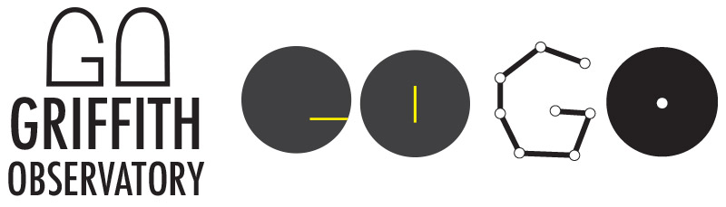

Griffith Observatory: Interactive Branding Experience
What if the Griffith Observatory could refresh its identity and programmming to connect with new and existing visitors?
The goal of this project was to create an interactive branding experience for a brand of my choosing. I chose The Griffith Observatory in Los Angeles because Space is awesome. Ok, that was only part of the reason. Besides being an iconic destination in L.A. where I was born and raised, the Observatory felt a bit outdated to me, so I thought it would be a fun challenge to freshen their identity and explore ways of enhancing their programming.
Like most projects, I began with research. Since I live in Los Angeles, I also spent some time visiting the Observatory to freshen my perspective on the experience and observe the other people there. It was interesting to see such a diverse audience in attendance. I also looked at other cultural institutions in Los Angeles and elsewhere to learn about their programming and identify some possible opportunities for the Observatory.
Given the fact that the Observatory didn't have an actual identifiable logo and their website was in dire need of a refresh, I decided to start there. I started with sketching some logo concepts and picked three to render and explore further.
After sharing these concepts and getting some feedback, I settled on the logo below because I felt it was the most flexible. I wanted to create something that could be easily used across multiple touchpoints.
From there I set out to work on redesigning the website. I started with a content audit of their current site, followed by wireframing and interface design.
Rather than stop there, I decided to take things a step further to explore ways that the Observatory can enhance the experience for visitors. Unlike other museums, the Observatory doesn't have rotating exhibits, nor the ability to really expand the building to add new ones. Whatever I came up with had to work with their existing space and exhibits. I started with sketching some different concepts.
While I liked several of the ideas from the initial sketches, I continued to brainstorm by asking questions and talking to people to understand what was lacking from the experience. One constraint I had was that I wanted to do something that would be educational rather than purely entertainment, since the mission of the Observatory is to "inspire everyone to observe, ponder, and understand the sky." Ultimately, I decided to create a mobile app that would guide visitors through a "scavenger hunt" throughout the premises. There would be various questions, based on the number of visits, which would require exploring the premises for answers. By completing the scavenger hunt, the user would be given a few reward options they can choose from to encourage further activities.
Finally, since the Observatory doesn't have the ability to expand and is tied to their current location, I came up with a "Star Gazer" truck concept that would allow the Observatory to take the experience of observing the sky off site. The truck could go to different locations with an astronomer and telescope on board to allow people to get a glimpse of the Universe. After all, it was Griffith J. Griffith that said, "If all mankind could look through that telescope, it would change the world!"
My Role
All of the work shown here was completed by myself.
Methods
- STEEPx research
- SWOT analysis
- Archetypes
- Sketching
- User journey
- Wireframing
- UI Design
Tools
- Illustrator
- Photoshop
- Keynote